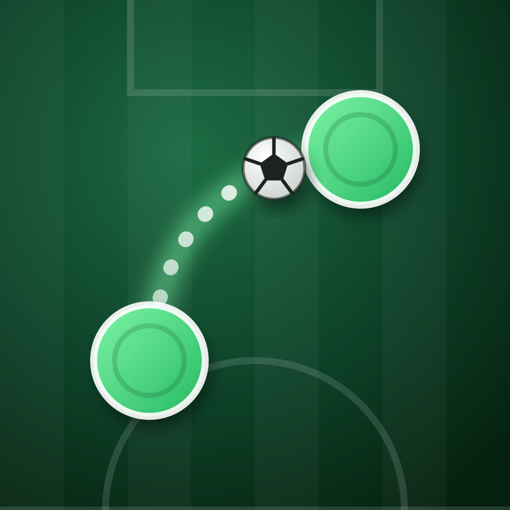

PassLaneEffective date: 18 October 2026
This policy explains how the PassLane app for iPhone (the “App”), published by Kingerders Studio (“we”, “us”), handles information.
We do not collect any personal information. The App has no sign-up or login, and it does not ask for your name, email address, location, contacts, photos or any other personal data. We do not operate servers that receive data from the App.
To work, the App saves a small amount of game data locally on your device only:
| Data | Purpose |
|---|---|
| Level progress and stars | Remember which levels you solved |
| Club name, crest and kit you choose | Show your team in the game |
| Settings (sound, haptics, appearance) | Keep your preferences |
| Free solution count and revealed solutions | Track the free solution hints |
This data never leaves your device through the App and is not accessible to us. The club name is free text that you choose; please do not enter personal information in it. Deleting the App removes this data. If you use iCloud or device backups, the data may be included in your own Apple backup, which is handled by Apple under its privacy policy.
Optional one-time purchases are processed entirely by Apple through the App Store. We do not receive or store your payment details, Apple ID or billing information. The App only checks with Apple whether a purchase is active, so it can unlock content and restore purchases. See Apple's Privacy Policy.
The App contains no advertising, no third-party analytics or tracking SDKs, and does not track you across apps or websites. We do not use the device advertising identifier.
We do not share any data with third parties because we do not collect any. The only external service the App uses is Apple's App Store for purchases.
The App is suitable for all ages and does not knowingly collect personal information from anyone, including children under 13 (or the equivalent minimum age in your country).
Because we hold no personal data about you, there is nothing for us to access, correct or delete. You control all game data on your device and can remove it at any time by deleting the App.
If we change how the App handles information, we will update this page and its effective date. Significant changes will also be noted in the App's release notes.
Questions about this policy? Visit the Support page or open an issue at github.com/kingerders-studio/PassLane/issues.